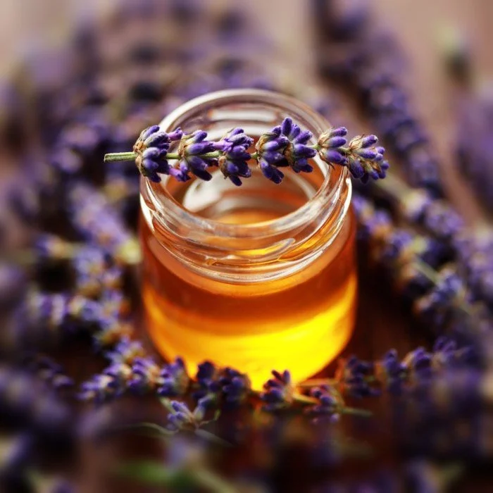

Home
Lavender Honey

Description
We had a lavender bush at home, so this quick recipe is by my grandmother.
Ingredients:
- Lavender flowers
- Water
- Honey
Preparation steps:
- Thoroughly wash the lavender flowers.
- Boil water in a pan, turn off the heat.
- Transfer the warm water into a small jar, fill half the jar, add the lavender flowers.
Close the jar when the water is close to room temperature, and let it set for about 24-48h.
- After letting it set, fill the jar with honey, mix.
- For a stronger lavender flavor, add the flowers to the water right before it boils. Transfer to the jar together.